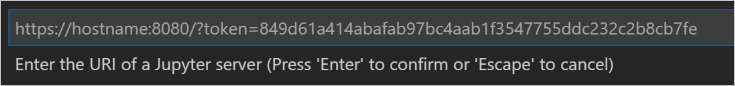

Jupyter Notebooks in VS Code
Jupyter (formerly IPython Notebook) is an open-source project that lets you easily combine Markdown text and executable Python source code on one canvas called a notebook. Visual Studio Code supports working with Jupyter Notebooks natively, and through Python code files. This topic covers the native support available for Jupyter Notebooks and demonstrates how to:
- Create, open, and save Jupyter Notebooks
- Work with Jupyter code cells
- View, inspect, and filter variables using the Variable Explorer and Data Viewer
- Connect to a remote Jupyter server
- Debug a Jupyter Notebook
Setting up your environment
To work with Python in Jupyter Notebooks, you must activate an Anaconda environment in VS Code, or another Python environment in which you've installed the Jupyter package. To select an environment, use the Python: Select Interpreter command from the Command Palette (kb(workbench.action.showCommands)).
Once the appropriate environment is activated, you can create and open a Jupyter Notebook, connect to a remote Jupyter server for running code cells, and export a Jupyter Notebook as a Python file.
Workspace Trust
When getting started with Notebooks, you'll want to make sure that you are working in a trusted workspace. Harmful code can be embedded in notebooks and the Workspace Trust feature allows you to indicate which folders and their contents should allow or restrict automatic code execution.
If you attempt to open a notebook when VS Code is in an untrusted workspace running Restricted Mode, you will not be able to execute cells and rich outputs will be hidden.
Create or open a Jupyter Notebook
You can create a Jupyter Notebook by running the Jupyter: Create Blank New Jupyter Notebook command from the Command Palette (kb(workbench.action.showCommands)) or by creating a new .ipynb file in your workspace.
Next, select a kernel using the kernel picker in the top right.
After selecting a kernel, the language picker located in the bottom right of each code cell will automatically update to the language supported by the kernel.
If you have an existing Jupyter Notebook, you can open it by right-clicking on the file and opening with VS Code, or through the VS Code File Explorer.
Running cells
Once you have a Notebook, you can run a code cell using the Run icon to the left of the cell and the output will appear directly below the code cell.
You can also use keyboard shortcuts to run code. When in command or edit mode, use kbstyle(Ctrl+Enter) to run the current cell or kbstyle(Shift+Enter) to run the current cell and advance to the next.
You can run multiple cells by using Run All, Run All Above, or Run All Below.
Save your Jupyter Notebook
You can save your Jupyter Notebook using the keyboard shortcut kbstyle(Ctrl+S) or File > Save.
Export your Jupyter Notebook
You can export a Jupyter Notebook as a Python file (.py), a PDF, or an HTML file. To export, select the Export action on the main toolbar. You'll then be presented with a dropdown of file format options.
Note: For PDF export, you must have TeX installed. If you don't, you will be notified that you need to install it when you select the PDF option. Also, be aware that if you have SVG-only output in your Notebook, they will not be displayed in the PDF. To have SVG graphics in a PDF, either ensure that your output includes a non-SVG image format or else you can first export to HTML and then save as PDF using your browser.
Work with code cells in the Notebook Editor
The Notebook Editor makes it easy to create, edit, and run code cells within your Jupyter Notebook.
Create a code cell
By default, a blank Notebook will have an empty code cell for you to start with.
msg = "Hello world"
print(msg)
Code cell modes
While working with code cells, a cell can be in three states: unselected, command mode, and edit mode. The current state of a cell is indicated by a vertical bar to the left of a code cell and editor border. When no bar is visible, the cell is unselected.
When a cell is selected, it can be in two different modes. It can be in command mode or in edit mode. When the cell is in command mode, it can be operated on and accept keyboard commands. When the cell is in edit mode, the cell's contents (code or Markdown) can be modified.
When a cell is in command mode, a solid vertical bar will appear to the left of the cell.
When you're in edit mode, the solid vertical bar is joined by a border around the cell editor.
To move from edit mode to command mode, press the kbstyle(Esc) key. To move from command mode to edit mode, press the kbstyle(Enter) key. You can also use the mouse to change the mode by clicking the vertical bar to the left of the cell or out of the code/Markdown region in the code cell.
Add additional code cells
Code cells can be added to a Notebook using the main toolbar, a cell's add cell toolbar (visible with hover), and through keyboard commands.
Using the plus icons in the main toolbar and a cell's hover toolbar will add a new cell directly below the currently selected cell.
When a code cell is in command mode, the kbstyle(A) key can be used to add a cell above and the kbstyle(B) can be used to add a cell below the selected cell.
Select a code cell
The selected code cell can be changed using the mouse, the up/down arrow keys on the keyboard, and the kbstyle(J) (down) and kbstyle(K) (up) keys. To use the keyboard, the cell must be in command mode.
Select multiple code cells
To select multiple cells, start with one cell in selected mode. If you want to select consecutive cells, hold down kbstyle(Shift) and click the last cell you want to select. If you want to select any group of cells, hold down kbstyle(Ctrl) and click the cells you'd like to add to your selection.
Selected cells will be indicated by the filled background.
Run a single code cell
Once your code is added, you can run a cell using the Run icon to the left of the cell and the output will be displayed below the code cell.
You can also use keyboard shortcuts to run a selected code cell. kbstyle(Ctrl+Enter) runs the currently selected cell, kbstyle(Shift+Enter) runs the currently selected cell and inserts a new cell immediately below (focus moves to new cell), and kbstyle(Alt+Enter) runs the currently selected cell and inserts a new cell immediately below (focus remains on current cell). These keyboard shortcuts can be used in both command and edit modes.
Run multiple code cells
Running multiple code cells can be accomplished in many ways. You can use the double arrow in the main toolbar of the Notebook Editor to run all cells within the Notebook or the Run icons with directional arrows in the cell toolbar to run all cells above or below the current code cell.
Move a code cell
Moving cells up or down within a Notebook can be accomplished via dragging and dropping. For code cells, the drag and drop area is to the left of the cell editor as indicated below. For rendered Markdown cells, you may click anywhere to drag and drop cells.

To move multiple cells, you can use the same drag and drop areas in any cell included in the selection.
You can also use the keyboard shortcuts kbstyle(Alt+Arrow) to move one or multiple selected cells.
Delete a code cell
Deleting a code cell can be accomplished by using the Delete icon in the code cell toolbar or through the keyboard shortcut kbstyle(dd) when the selected code cell is in command mode.
Undo your last change
You can use the kbstyle(z) key to undo your previous change, for example, if you've made an accidental edit, you can undo it to the previous correct state, or if you've deleted a cell accidentally, you can recover it.
Switch between code and Markdown
The Notebook Editor allows you to easily change code cells between Markdown and code. Clicking the language picker in the bottom right of a cell will allow you to switch between Markdown and, if applicable, any other language supported by the selected kernel.
You can also use the keyboard to change the cell type. When a cell is selected and in command mode, the kbstyle(M) key switches the cell type to Markdown and the kbstyle(Y) key switches the cell type to code.
Once Markdown is set, you can enter Markdown formatted content to the code cell.
To render Markdown cells, you can select the check mark in the cell toolbar, or use the kbstyle(Ctrl+Enter) and kbstyle(Shift+Enter) keyboard shortcuts.
Clear output or restart/interrupt the kernel
If you'd like to clear all code cell outputs or restart/interrupt the kernel, you can accomplish that using the main Notebook Editor toolbar.
Enable/disable line numbers
When you are in command mode, you can enable or disable line numbering within a single code cell by using the kbstyle(L) key.
To toggle line numbering for the entire notebook, use kbstyle(Shift+L) when in command mode on any cell.
Table of Contents
To navigate through your notebook, open the File Explorer in the Activity bar. Then open the Outline tab in the Side bar.
Note: By default, the outline will only show Markdown. To show code cells, enable the following setting: Notebook > Outline: Show Code Cells.
IntelliSense support in the Jupyter Notebook Editor
The Python Jupyter Notebook Editor window has full IntelliSense – code completions, member lists, quick info for methods, and parameter hints. You can be just as productive typing in the Notebook Editor window as you are in the code editor.
Variable Explorer and Data Viewer
Within a Python Notebook, it's possible to view, inspect, sort, and filter the variables within your current Jupyter session. By selecting the Variables icon in the main toolbar after running code and cells, you'll see a list of the current variables, which will automatically update as variables are used in code. The variables pane will open at the bottom of the notebook.

For additional information about your variables, you can also double-click on a row or use the Show variable in data viewer button next to the variable for a more detailed view of a variable in the Data Viewer. Once open, you can filter the values by searching over the rows.

Saving plots
To save a plot from your notebook, simply hover over the output and select the Save icon in the top right.
Note: There is support for rendering plots created with matplotlib and Altair.
Custom notebook diffing
Under the hood, Jupyter Notebooks are JSON files. The segments in a JSON file are rendered as cells that are comprised of three components: input, output, and metadata. Comparing changes made in a notebook using lined-based diffing is difficult and hard to parse. The rich diffing editor for notebooks allows you to easily see changes for each component of a cell.
You can even customize what types of changes you want displayed within your diffing view. In the top right, select the overflow menu item in the toolbar to customize what cell components you want included. Input differences will always be shown.
To learn more about Git integration within VS Code, visit Version Control in VS Code.
Debug a Jupyter Notebook
If you need additional debug support in order to diagnose an issue in your code cells, you can export it as a Python file. Once exported as a Python file, the VS Code debugger lets you step through your code, set breakpoints, examine state, and analyze problems. Using the debugger is a helpful way to find and correct issues in notebook code. To debug your Python file:
In VS Code, if you haven't already, activate a Python environment in which Jupyter is installed.
From your Jupyter Notebook (
.ipynb), select the Export button in the main toolbar.Once exported, you'll have a
.pyfile with your code that you can use for debugging.After saving the
.pyfile, to start the debugger, use one of the following options:- For the whole Notebook, open the Command Palette (
kb(workbench.action.showCommands)) and run the Python: Debug Current File in Python Interactive Window command. - For an individual cell, use the Debug Cell action that appears above the cell. The debugger specifically starts on the code in that cell. By default, Debug Cell steps into user code. If you want to step into non-user code, you need to uncheck Data Science: Debug Just My Code in the Python extension settings (
kb(workbench.action.openSettings)).
- For the whole Notebook, open the Command Palette (
To familiarize yourself with the general debugging features of VS Code, such as inspecting variables, setting breakpoints, and other activities, review VS Code debugging.
As you find issues, stop the debugger, correct your code, save the file, and start the debugger again.
When you're satisfied that all your code is correct, use the Python Interactive window to export the Python file as a Jupyter Notebook (
.ipynb).
Connect to a remote Jupyter server
You can offload intensive computation in a Jupyter Notebook to other computers by connecting to a remote Jupyter server. Once connected, code cells run on the remote server rather than the local computer.
To connect to a remote Jupyter server:
Select the Jupyter Server: local button in the global Status bar or run the Jupyter: Specify local or remote Jupyter server for connections command from the Command Palette (
kb(workbench.action.showCommands)).When prompted to Pick how to connect to Jupyter, select Existing: Specify the URI of an existing server.
When prompted to Enter the URI of a Jupyter server, provide the server's URI (hostname) with the authentication token included with a
?token=URL parameter. (If you start the server in the VS Code terminal with an authentication token enabled, the URL with the token typically appears in the terminal output from where you can copy it.) Alternatively, you can specify a username and password after providing the URI.
Note: For added security, Microsoft recommends configuring your Jupyter server with security precautions such as SSL and token support. This helps ensure that requests sent to the Jupyter server are authenticated and connections to the remote server are encrypted. For guidance about securing a notebook server, refer to the Jupyter documentation.